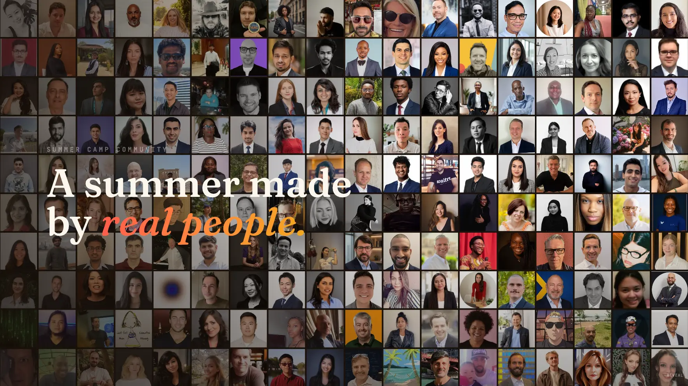
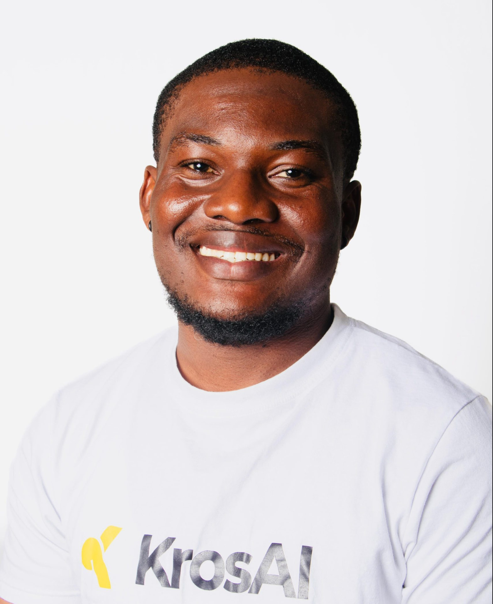

AUGUST–OCTOBER 2025
AI Founder Sprint 2025
The first Sprint connected more than 500 founders across over 70 countries for a ten-week virtual programme.
View the original programme ↗ (opens in a new tab)PAST PROGRAMMES
Explore the programmes that brought founders together to experiment, learn and build with AI.
AUGUST–OCTOBER 2025
The first Sprint connected more than 500 founders across over 70 countries for a ten-week virtual programme.
View the original programme ↗ (opens in a new tab)
JUNE–AUGUST 2026
A ten-week virtual experience with Audos, supporting aspiring founders in building their first business.
View the original programme ↗ (opens in a new tab)FROM OUR COMMUNITY
Experiences from the Lab’s founder community.

KrosAI
Demo Day recognition helped strengthen KrosAI’s credibility in investor conversations.

Gadi.ai
A non-technical founder bringing AI into the way the whole company operates.
Mavic.AI
Learning to test assumptions and recognise when a venture needs a different direction.
GET INVOLVED
Use AI to build, test and grow your venture.
Apply as a founder ↗ (opens in a new tab)Share your experience with the next cohort.
Apply as a mentor ↗ (opens in a new tab)Connect founders and guide a peer group.
Apply as a Community Lead ↗ (opens in a new tab)